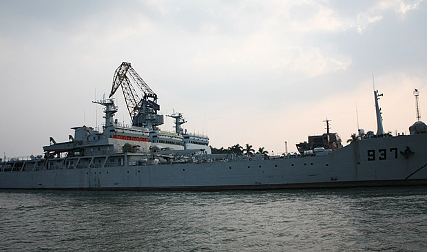
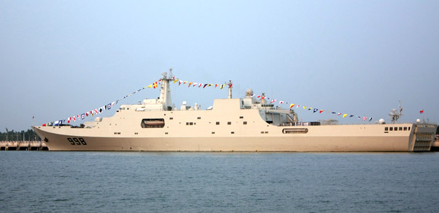
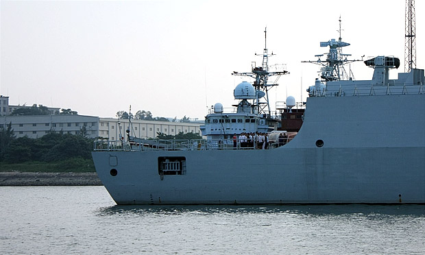
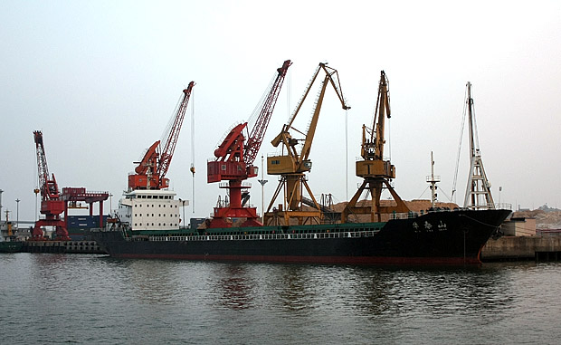
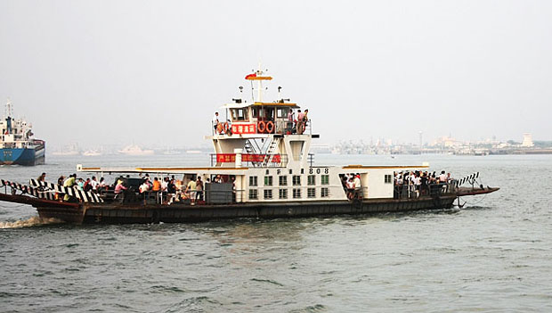
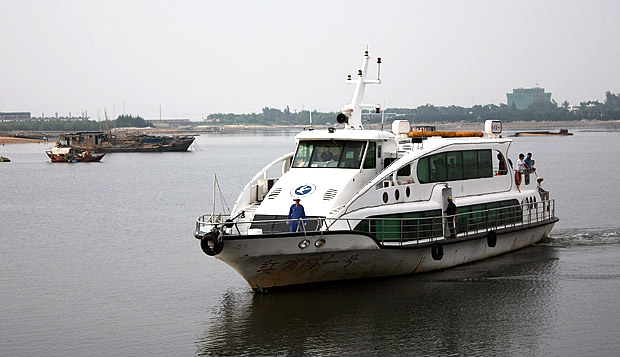

湛江是国内第一批沿海开放城市，但基本是这一批城市里发展最慢的一个。诺大的一个深水良港，没有物尽其用实在是遗憾。除了领导等很多的原因，当然也有一条是因为这之前一直是军港。虽然住了那么多年，这次回去还是第一次回去游军港。（以下图片网络上均可找到图片资料，不属机密，阿弥陀佛。）

9字头，新型登陆舰

998，“昆仑山”号大型船坞登陆舰，我国海军目前最大、最先进的现代化大型登陆舰。

训练中的水兵

1字头 ，导弹驱逐舰

不大热闹的货船

渡轮，岛上的人以前只能靠渡轮过海，现在多了一道海湾大桥。

红嘴鸥一号，我们的游船，因每年冬天飞来湛江过冬的红嘴鸥得名。